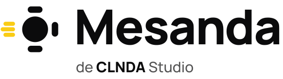
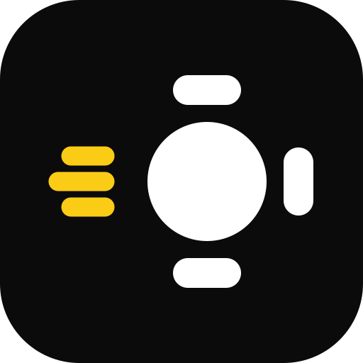
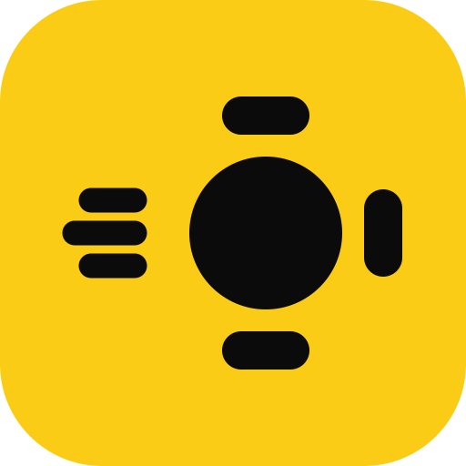

Mesanda · paquete de marca
Comandero de CLNDA Studio. La mesa con estela dice «mesa» y «rápido»; blanco y negro hacen el trabajo y el amarillo señala lo que necesita al mesero.
Logotipo
Símbolo y app icon


Color
Negro
texto, mesas ocupadas, fondos de marca
#0b0b0ctexto, mesas ocupadas, fondos de marca
Blanco
fondo de la app y de los materiales
#fffffffondo de la app y de los materiales
Amarillo señal
acción principal y «cuenta pedida»
#facc15acción principal y «cuenta pedida»
Amarillo texto
texto amarillo sobre blanco (6.4:1)
#7a5a00texto amarillo sobre blanco (6.4:1)
Reglas
- El amarillo tiene dos trabajos en la app: la acción principal y la mesa que necesita al mesero. Nada más.
- Sobre amarillo, siempre texto negro (12.8:1). Nunca texto amarillo sobre blanco (1.5:1): para eso, amarillo texto.
- Debajo de 24 px, el símbolo pequeño (dos líneas gruesas).
- Nada de naranja.
- «de CLNDA Studio» acompaña al logotipo en ventas y materiales; en la app basta Mesanda.